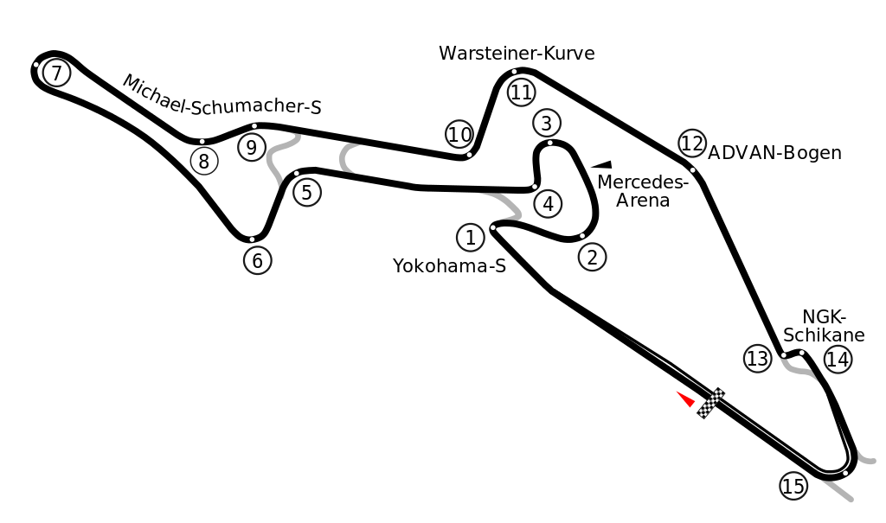

|  | Nürburgring es un autódromo ubicado alrededor del pueblo de Nürburg, estado de Renania-Palatinado, Alemania. Se encuentra en las montañas Eifel, unos 60 km al oeste de la ciudad de Coblenza.
|
El Circuito Internacional de Baréin (en árabe حلبة البحرين الدولية baraahin al-intarnals wadjaviyaa), más conocido como Sakhir, es un autódromo localizado en la ciudad de Manama, Baréin, sede actual del Gran Premio de Baréin de Fórmula 1. La construcción del circuito para poder albergar una fecha de la temporada de Fórmula 1 fue un objetivo nacional para Baréin, impulsado por el príncipe Salman bin Hamad Al Khalifa. |
|
El Circuito Yas Marina es un circuito de carreras que se construyó en la Isla Yas, emirato de Abu Dabi. Yas Marina fue construido por la empresa Aldar, y se emplaza en un proyecto urbanístico que incluye un parque temático, puerto deportivo, zonas residenciales, un parque acuático, zonas de deporte y ocio, un hotel con vistas al circuito (Yas Viceroy) desde las habitaciones y una torre exclusiva para los jeques al final de la recta principal o largada. |